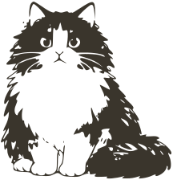

Datos reales de Puente Alto; las siluetas salen del set de 22 poses. El tema se cambia en Tweaks: arena (día), cacao (oscuro cálido) o noche (tinta neutra).
1 · Hoy
gatito.cl
Puente Alto
Ahora · 19:00
9°
Lluvia
máx 14° · mín 7°
Humedad 82%Lluvia 53%Viento 12 km/h
La próxima hora
en vivo
Empieza a llover fuerte en 20 minutos
19:0019:3020:0020:3021:00
Hora por hora
ahora
9°
53%
20:00
9°
61%
21:00
8°
58%
22:00
8°
30%
23:00
7°
12%
Acuerdo entre modelos
confianza baja
3 de 4 anuncian lluvia
ECMWF dice que no, y pone la máxima 2,6° más arriba. Cuando 3 de 4 coincidieron acá, llovió 5 de cada 10 veces.
ECMWF
seco
GFS
llueve
ICON
llueve
GEM
llueve

Desde mañana, cinco días seco y subiendo. Ver la semana
2 · Siete días
←
Siete días
Puente Alto
hoylluvia53%82%14°7°
mañanadespejado0%61%17°5°
miércolesnublado0%58%17°6°
juevesdespejado0%55%19°8°
viernescálido, despejado0%42%22°8°
viernes: los modelos difieren 2,9° en la máxima
sábadocálido, despejado0%44%21°10°
domingonublado5%51%20°10°
A siete días el error crece: a 24 h fallamos 1,18° en promedio; al séptimo día, más del doble. Por eso mostramos cuándo los modelos discrepan en vez de esconderlo.
3 · Detalle por hora
←
Hoy, hora por hora
hoymañanamiércoles
Temperatura
14 h17 h19 h22 h01 h
19:00lluvia · 82% hum · 12 km/h9°
20:00lluvia 61% · 84% hum9°
21:00lluvia 58% · 85% hum8°
22:00chubascos 30% · 83% hum8°
23:00nublado · 80% hum7°
00:00nublado · 78% hum7°
01:00despejándose · 74% hum7°
La lluvia por hora todavía no la medimos contra la estación: es la del ensamble, sin calibrar. La temperatura sí.
4 · Comunas
¿Dónde estás?
⌕Buscar comuna o localidad…
Calibradas con estación local
Puente Altolluvia · error 1,18°9°
La Floridalluvia · error 1,13°10°
Quinta Normalnublado · error 1,35°11°
Rencanublado · error 1,42°11°
Colinafrío · error 1,58°7°
Pudahuelnublado · calibrada, sin cifra publicada10°
Cualquier otro punto de Chile se puede ver, pero sale sin calibrar: promedio parejo de los cuatro modelos. Lo avisamos en la pantalla, no en el pie.
5 · Aire y polen
←
Aire y polen
Calidad del aire · ICAP
42
Bueno
la lluvia lavó el aire
buenoregularmalocrítico
PM2,5
11
µg/m³ · bajo
PM10
28
µg/m³ · bajo
Polen
Gramíneasalto
Plátano orientalmedio
Abedulbajo
Buen día para salir a correr: aire limpio, pero llevá antihistamínico si te pega el pasto.